CS 180 Project 2
Fun with Filters and Frequencies · Kavish Kondap
Overview
This project covers filtering images and working with their frequencies. In Part 1, I implement convolution from scratch and use it for edge detection with finite difference and derivative of Gaussian filters. In Part 2, I use Gaussian filters to sharpen images, create hybrid images, and blend images together with Gaussian and Laplacian stacks.
Part 1.1: Convolutions from Scratch
I implemented convolution with numpy in two ways: with four for loops (two over the output pixels, two over the kernel), and with two for loops (over the output pixels, with the kernel loops replaced by an elementwise multiply and np.sum). Both versions flip the kernel across both axes first, and both pad the image with zeros. I support same padding (pad half the kernel size on each side, so the output is the same size as the input), full padding (pad the kernel size minus one on each side), and valid (no padding).
def conv(img, kernel: np.ndarray, padding: str = "same", impl="2"):
if impl == "scipy":
return scipy.signal.convolve2d(img, kernel, mode=padding)
flipped_kernel = np.flip(kernel) # flips across both axes
if padding == "valid":
pass
elif padding == "same":
pad_rows = (flipped_kernel.shape[0] // 2, flipped_kernel.shape[0] // 2)
pad_cols = (flipped_kernel.shape[1] // 2, flipped_kernel.shape[1] // 2)
img = np.pad(img, (pad_rows, pad_cols), mode="constant", constant_values=0)
elif padding == "full":
pad_rows = (flipped_kernel.shape[0] - 1, flipped_kernel.shape[0] - 1)
pad_cols = (flipped_kernel.shape[1] - 1, flipped_kernel.shape[1] - 1)
img = np.pad(img, (pad_rows, pad_cols), mode="constant", constant_values=0)
else:
raise ValueError(
f"{padding=} is not a valid input for padding. Options are valid, same and full"
)
output_shape = (
img.shape[0] - flipped_kernel.shape[0] + 1,
img.shape[1] - flipped_kernel.shape[1] + 1,
)
output_img = np.zeros(output_shape)
if impl == "4":
for row in range(output_shape[0]):
for col in range(output_shape[1]):
subtotal = 0
for krow in range(flipped_kernel.shape[0]):
for kcol in range(flipped_kernel.shape[1]):
subtotal += (
flipped_kernel[krow, kcol] * img[row + krow, col + kcol]
)
output_img[row, col] = subtotal
elif impl == "2":
for row in range(output_shape[0]):
for col in range(output_shape[1]):
output_img[row, col] = np.sum(
img[
row : row + flipped_kernel.shape[0],
col : col + flipped_kernel.shape[1],
]
* flipped_kernel
)
return output_img
To test it, I took a picture of myself, read it as grayscale, and convolved it with a 9 × 9 box filter, as well as the finite difference operators Dx = [1, 0, -1] and Dy = [1, 0, -1]T. The results below use same padding.
Comparison with scipy
I compared both implementations against scipy.signal.convolve2d for all three filters and all three padding modes. The outputs match, with a maximum absolute difference of around 10-12, which is floating point error. The runtimes below are for the 9 × 9 box filter on my 1024 × 768 photo with same padding.
| Implementation | Runtime |
|---|---|
| Four for loops | 9.54 s |
| Two for loops | 1.06 s |
scipy.signal.convolve2d | 0.63 s |
For boundaries, my implementation fills everything outside the image with zeros. This is the same as the scipy default (boundary="fill", fillvalue=0), which is why the outputs match all the way to the border, and my same, full, and valid modes give the same output sizes as scipy's. Scipy also supports wrap and symm boundaries, which I did not implement. One effect of zero padding is visible in the box filter result, where the border of the image gets darker since the zeros are averaged in.
Part 1.2: Finite Difference Operator
To find the edges of the cameraman image, I convolve it with Dx and Dy to get the partial derivatives in x and y, and then combine them into the gradient magnitude.
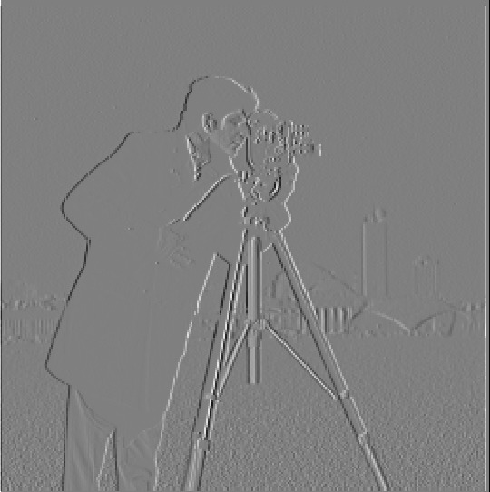
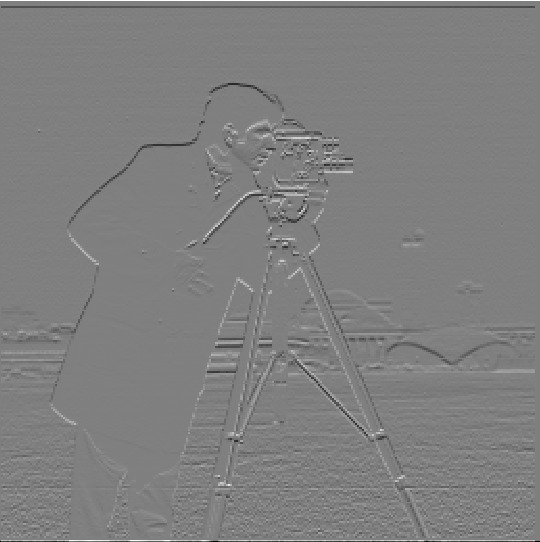
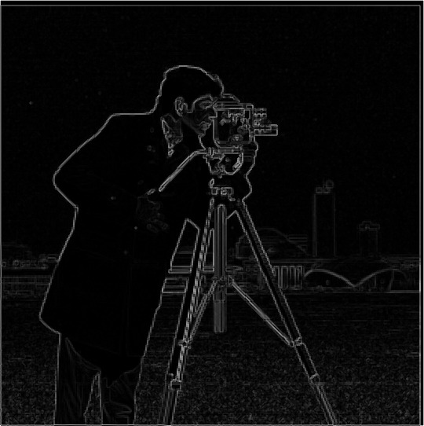
To get an edge image, I binarize the gradient magnitude with a threshold. I tried thresholds at multiples of 10% of 255, and three of them are shown below. I chose 76.5 (30% of 255). At 51, the edges are more complete, but there is still a lot of noise from the grass at the bottom of the image. At 76.5 almost all of the grass noise is gone, at the cost of losing the buildings in the background and parts of the tripod legs. At 102 there is no noise left, but the outline of the cameraman himself starts to break apart. I preferred removing the noise over keeping the background buildings, since the cameraman and the tripod are the main subject.
Part 1.3: Derivative of Gaussian (DoG) Filter
The results above are noisy, so here I first blur the image with a Gaussian filter and then repeat the same procedure. I create the 2D Gaussian with cv2.getGaussianKernel (kernel size 5, σ = 2) and take the outer product of the 1D kernel with its transpose.
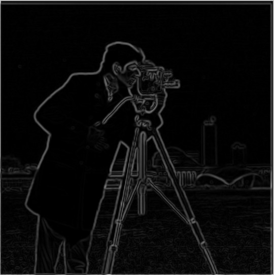
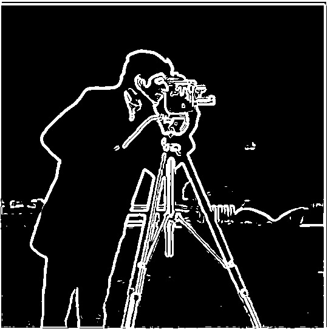
Compared to the finite difference result, the edges are thicker and smoother, and they are continuous instead of broken into small pieces. The noise from the grass is gone, since blurring removes the high frequency noise before the derivative is taken. Because of this, I can use a much lower threshold (25.5, or 10% of 255), which keeps the buildings in the background and the full tripod, both of which were lost in Part 1.2. The threshold has to be lower in general, since blurring also lowers the gradient magnitudes.
DoG filters
Instead of blurring and then taking the derivative, we can do both in a single convolution. Since convolution is associative, I convolve the Gaussian with Dx and Dy (with full padding) to get two derivative of Gaussian filters, shown below.
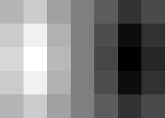
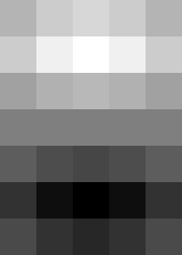
Convolving the original image with these two filters gives the same result as before. The maximum absolute difference between the two gradient magnitude images is around 10-13 everywhere except within a few pixels of the image border. The border is different because of zero padding: when blurring first, the blurred image is cropped back to the image size before the derivative is taken, whereas the DoG filter sees the zero padding directly.
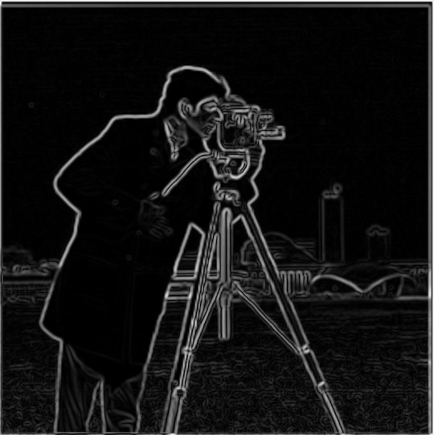
Part 2.1: Image Sharpening
An image looks sharper if it has stronger high frequencies. A Gaussian filter is a low pass filter, so blurring an image keeps only its low frequencies. If we subtract the blurred image from the original, we are left with only the high frequencies. Adding these back to the original, scaled by α, gives the sharpened image. This can be written as a single convolution, which is the unsharp mask filter:
Notation. f is the image, g is the Gaussian filter, e is the unit impulse (1 in the center, 0 everywhere else), and α is the sharpening amount. I use a Gaussian with σ = 2 and kernel size 13 for the Taj Mahal and tree results below.
Taj Mahal
As α increases, the details in the marble and the edges of the building become more defined. At α = 1 and α = 2 the image looks sharper than the original. At α = 5 it is oversharpened, with bright and dark halos around the edges.
Tree
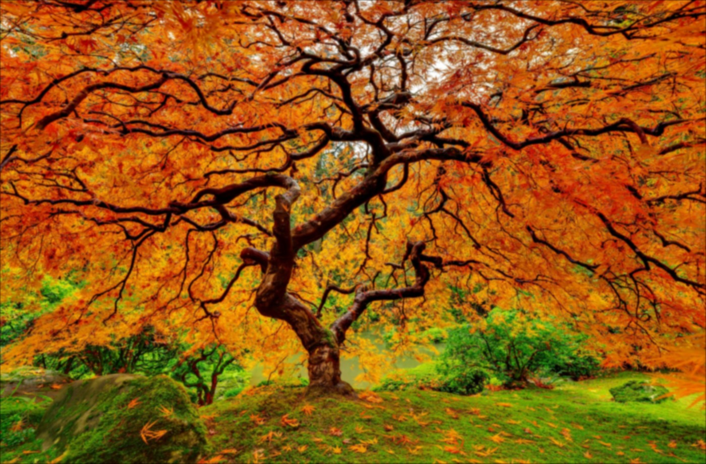
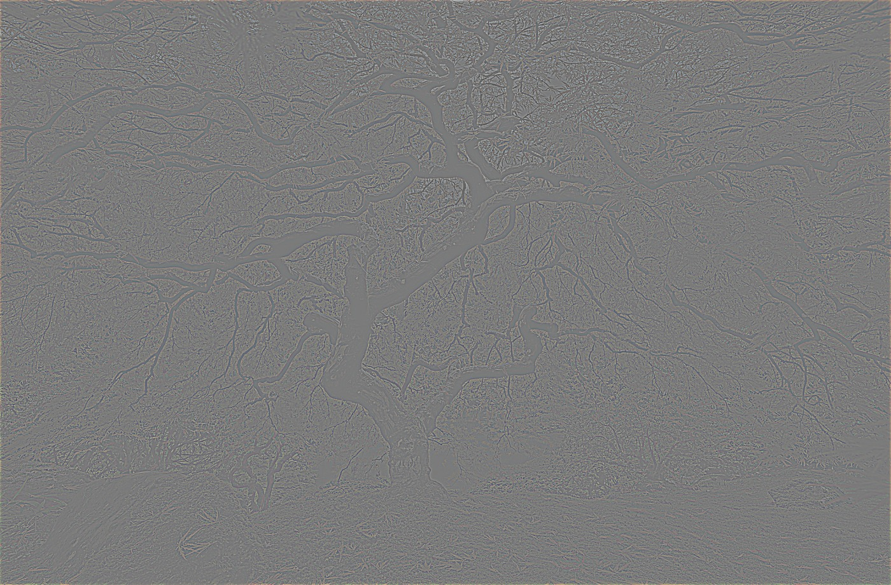
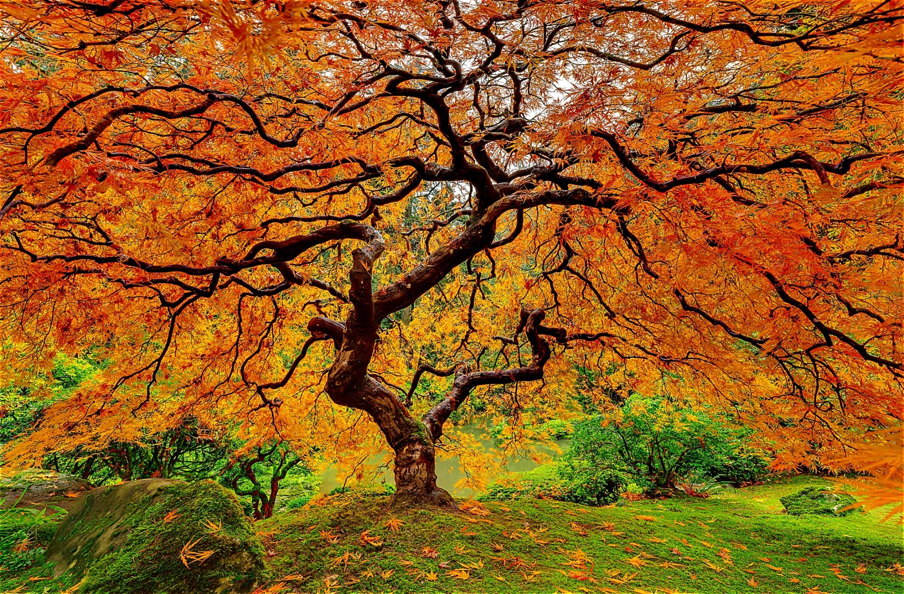
Blurring a sharp image, then sharpening it
For this I picked a sharp image, blurred it with a larger Gaussian (σ = 4, kernel size 25), and then sharpened the blurred image using the same Gaussian.
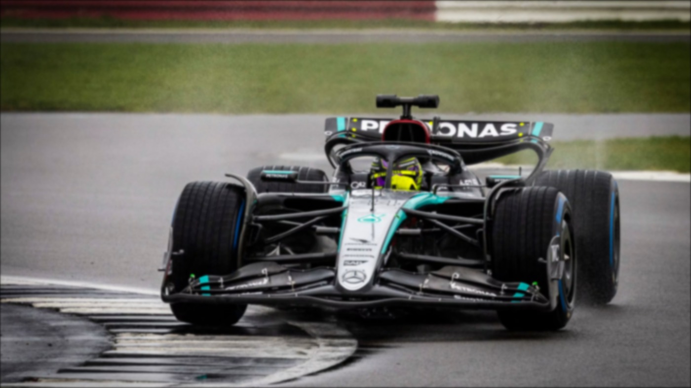
The sharpened image looks better than the blurred one, since the edges have more contrast, but it does not recover the original. Fine details such as the small text on the car and the rain are still missing, and the edges are thicker than in the original. This is because blurring removes the highest frequencies entirely, and sharpening can only amplify the frequencies that are still in the image. It cannot bring back the ones that were removed.
Part 2.2: Hybrid Images
A hybrid image looks like one image up close and a different image from far away. Up close, the high frequencies dominate what we see, but from far away only the low frequencies are visible. So to make one, I take the low frequencies of one image and add them to the high frequencies of another. For the low pass filter I use a Gaussian, and for the high pass filter I subtract the Gaussian blurred image from the original (aka, the impulse filter minus the Gaussian). I keep color in both images. Each Gaussian has kernel size 6σ + 1.
Charlie Brown and Linus, full process
This is my favorite result, so I show the whole process for it. I first align the two images by clicking two matching points in each image, which rescales, rotates, and crops them so that the points overlap.
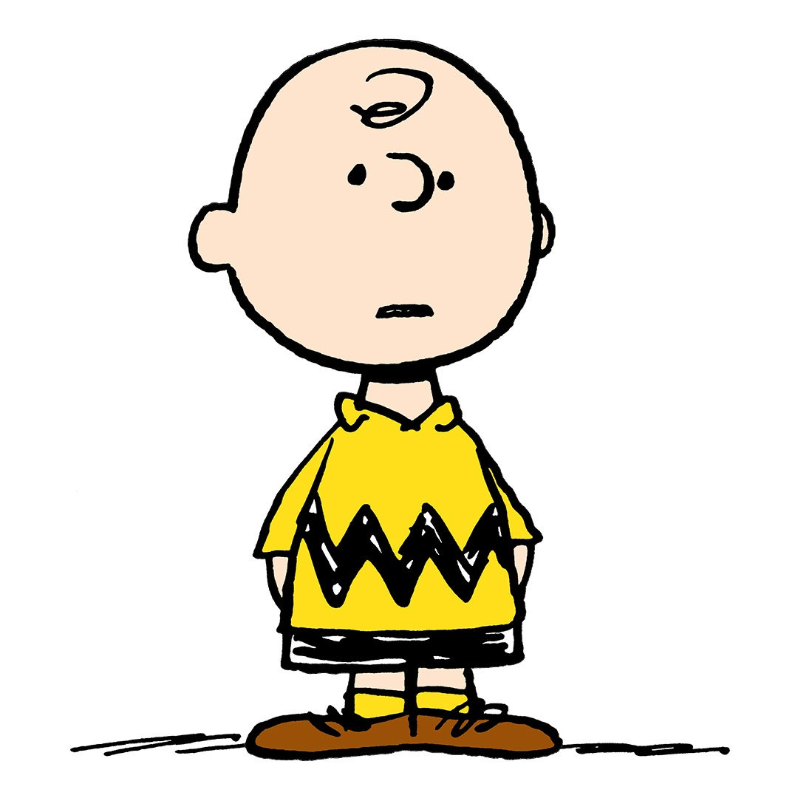
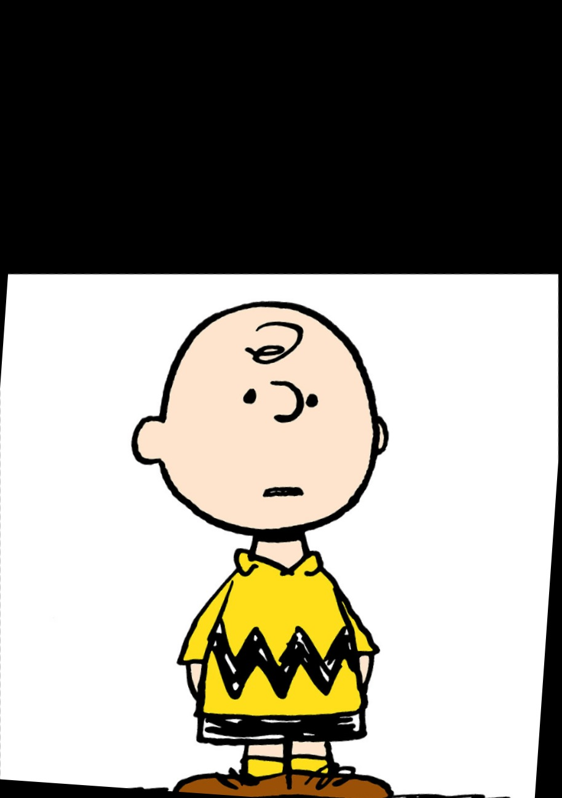
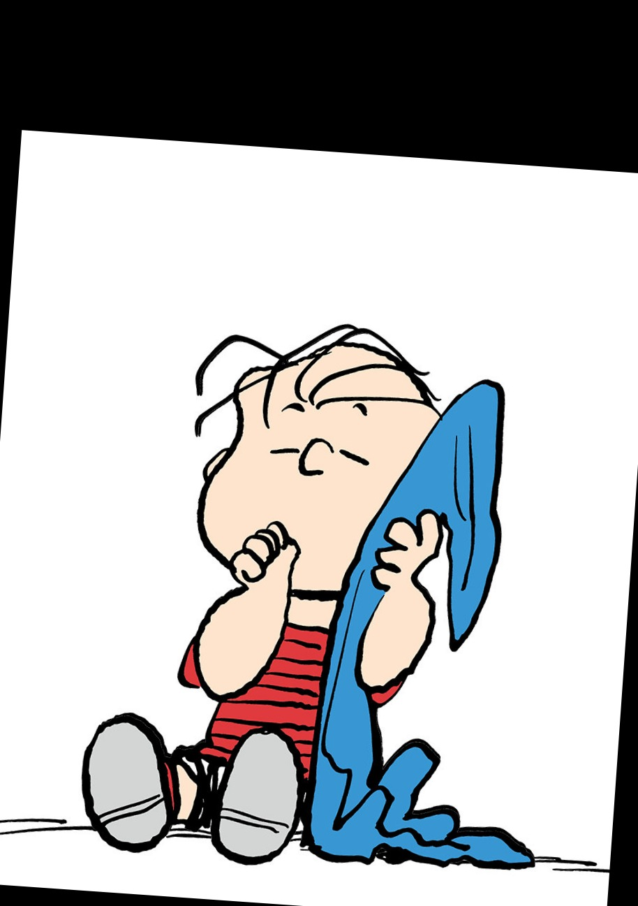
I chose the cutoff frequencies by experimenting with different values of σ. I ended up with σ = 12 for the low pass filter on Charlie Brown and σ = 3 for the high pass filter on Linus. Since Linus is a line drawing, a small σ on the high pass keeps only his thin outlines and removes everything else.
Below is the log magnitude of the Fourier transform of each image. The low pass filtered Charlie Brown only has energy left in the center, which is the low frequencies. The high pass filtered Linus keeps the frequencies away from the center. The hybrid image has both.
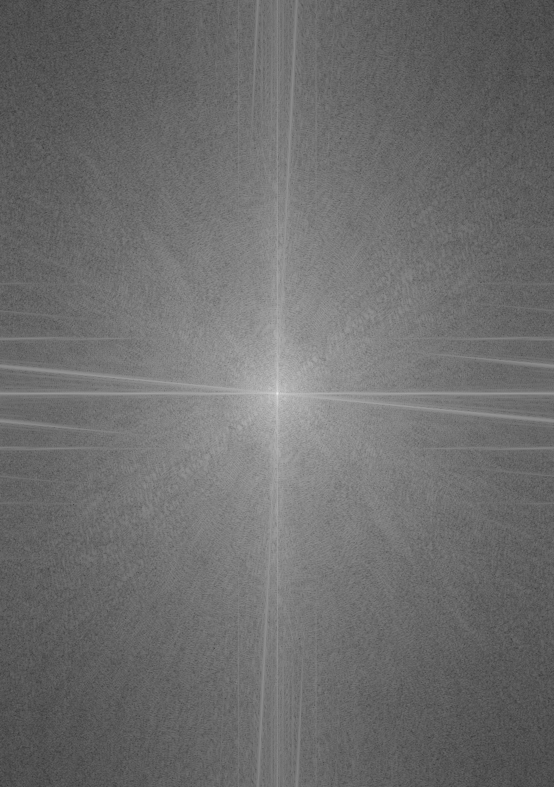
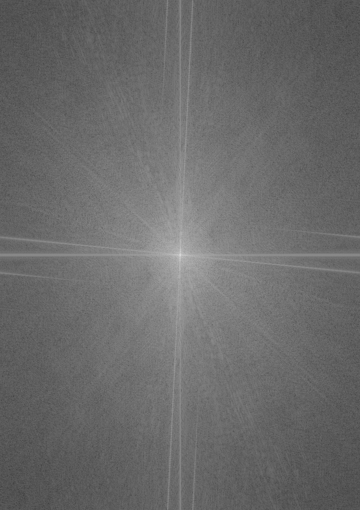
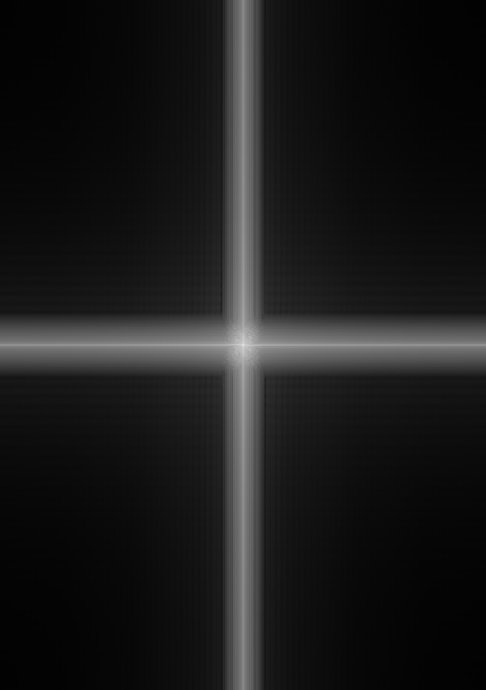
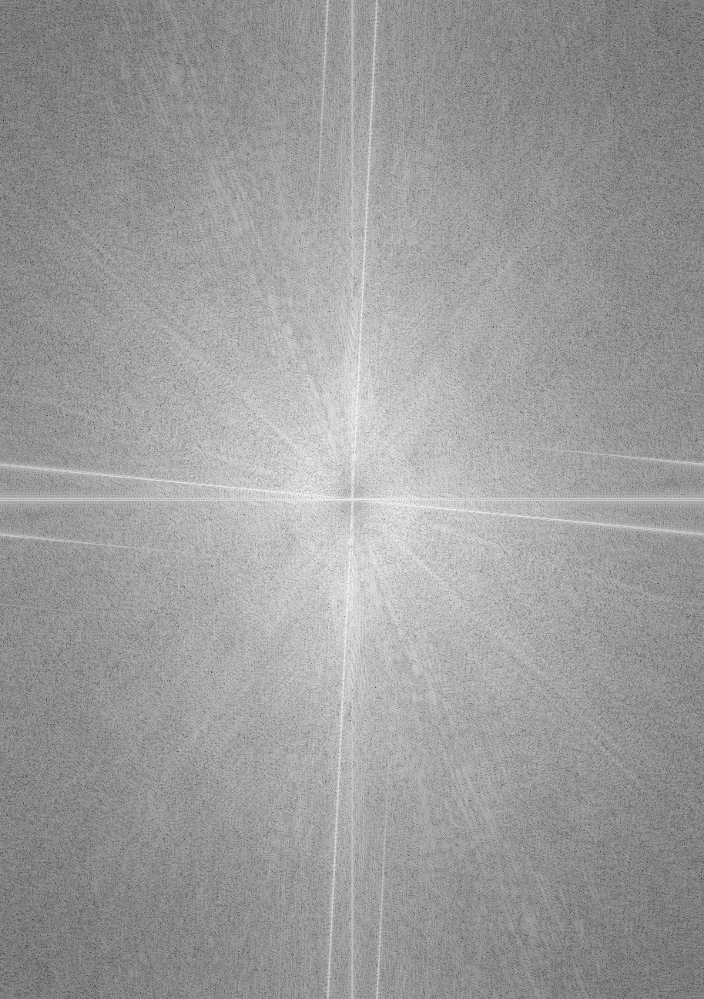
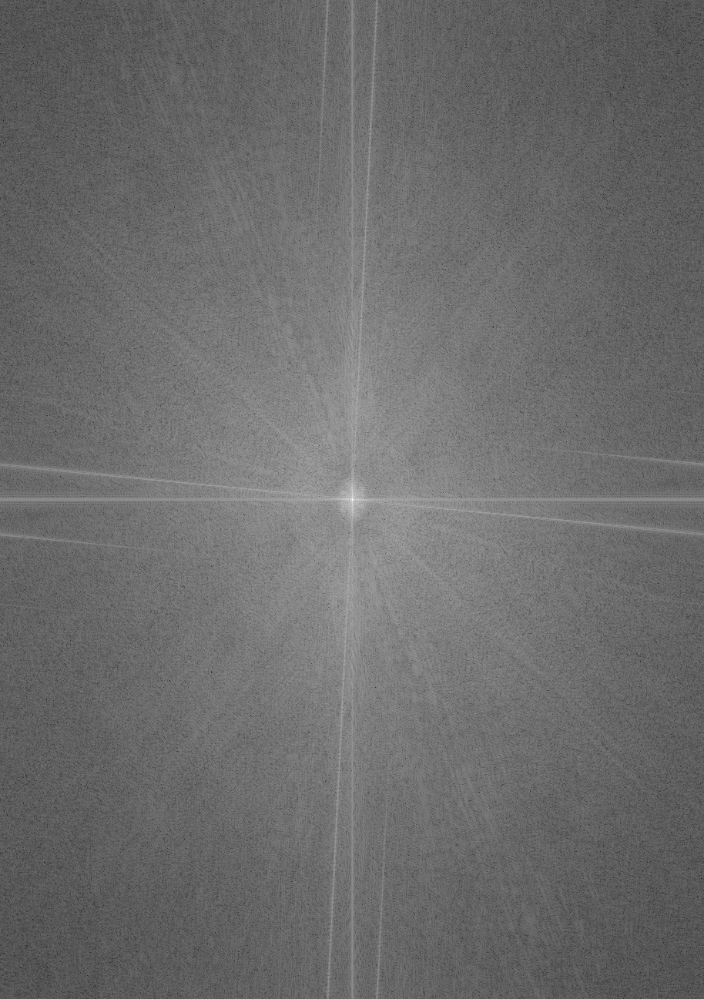
Derek and Nutmeg
Lion and tiger
The lion and tiger photos are from Wikimedia Commons: lion by Profberger and tiger by Steve Wilson.
Part 2.3: Gaussian and Laplacian Stacks
A stack is the same as a pyramid, except the image is never downsampled, so every level is the same size as the original. For the Gaussian stack, each level is the previous level blurred with a Gaussian. Since I am not downsampling, I double σ at every level instead. Each level of the Laplacian stack is the difference between two consecutive levels of the Gaussian stack, and the last level is the last level of the Gaussian stack, so that summing the Laplacian stack gives back the original image. I implemented both from scratch, using only cv2.GaussianBlur for the blur.
Below are the stacks for the apple and the orange, with 6 levels and σ = 2 at the first level.
Apple, Gaussian stack
Apple, Laplacian stack

Orange, Gaussian stack
Orange, Laplacian stack

Recreating Figure 3.42
Each row below is one level of the Laplacian stack (levels 0, 2, and 4, from high to low frequencies). The first column is the apple multiplied by the mask, the second column is the orange multiplied by the mask, and the third column is their sum. The last row is the sum over all levels.
Part 2.4: Multiresolution Blending
To blend two images, I build a Laplacian stack for each image and a Gaussian stack for the mask. At each level, I combine the two Laplacian levels using the mask at that level as the weights, and then sum over all the levels to get the final image.
Notation. Ai and Bi are level i of the Laplacian stacks of the two images, Mi is level i of the Gaussian stack of the mask, and Li is level i of the blended stack.
Since the mask gets blurrier at every level, the low frequencies are blended over a wide region and the high frequencies are blended over a narrow one, which hides the seam. For the oraple above, the mask is a step function, with the left half set to 0 and the right half set to 1. For the two blends below, I select the mask by clicking a polygon around the region I want to keep from the second image.
Surfer on a sand dune
The crest of this sand dune is shaped like a wave, so I put a surfer on it. This blend uses an irregular mask drawn around one of the surfers and his board, with 5 levels and σ = 2 at the first level.
This is my favorite result, so below are the masked input images and the Laplacian stacks, in the same layout as the oraple above.
Earth on an ice cream sundae
Here I replace the cherry on top of an ice cream sundae with the Earth. The mask is a circle around the Earth. This blend uses 4 levels and σ = 1 at the first level.
The photos for these two blends are from Wikimedia Commons: surfers by Brigitte Bourger, dune by Giles Laurent, sundae by Renee Comet, and Earth by NASA. Before blending, I flipped the dune horizontally and resized it to match the surfer photo, cropped the sundae, and resized the Earth to the size of the cherry and placed it at the same position.
Most Important Thing I Learned
The most important thing I learned is that an image can be split into low and high frequencies, and that each can be changed separately. Sharpening, hybrid images, and multiresolution blending all use the same idea: blur the image to get the low frequencies, subtract to get the high frequencies, and then recombine them in a different way.